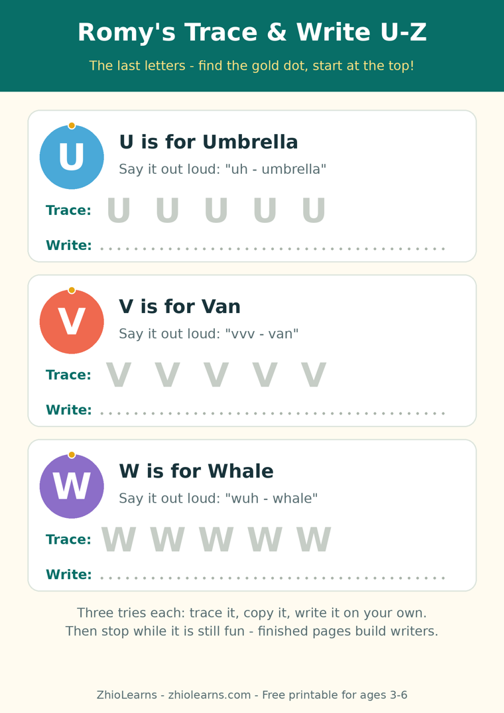

Three Tries and Done: How Small, Finishable Pages Build Writing Confidence
Watch a 4-year-old start a long tracing page. The first two letters are careful, even proud. Letter five is wobblier. By letter nine the pencil is pressing harder, the sighs are arriving, and the page gets pushed away half-finished — with a conclusion no parent wants to hear: writing is not my thing.
The letter was never the problem. The finish line was just too far away. For a small child, a page is not a worksheet — it is a distance. Shorten the distance, and the same child finishes, beams, and asks for the pencil again tomorrow.
Finishing is the lesson underneath the lesson
Adults practise writing to improve the writing. Young children practise writing to decide who they are: someone who can, or someone who can’t. Every completed page is a small piece of evidence for “someone who can.” Every abandoned page argues the other side. That is why the best early writing practice is not the longest or the neatest — it is the kind a child can actually finish, most days, without a rescue operation.
This is also why stopping matters. When a child finishes and we say “just one more page,” we spend the win we just earned. When we stop while it is still fun, the last feeling attached to writing is success — and success is what brings them back.
The three-tries routine
- Trace it. Follow the guided letter once, slowly, starting from the gold dot at the top. Say the sound out loud as the pencil moves.
- Copy it. Write it once with the finished example still right beside them — close enough to peek, far enough to try.
- Write it alone. One letter, completely on their own. Wobbly counts. Backwards gets a gentle re-try tomorrow, not a red-pen moment today. Then stop — even if they ask for more. Especially if they ask for more.
Three tries take about five minutes. That is not a shortcut; it is the right size for a 3- to 6-year-old’s hand, attention, and pride. A little, finished, every day beats a lot, abandoned, once a week.
A writing book built to be finished
Romy’s Alphabet Writing Practice is built on exactly this shape: trace first, then write independently, in short completable pages that end in success rather than frustration. It is made for the stage between “I know my letters” and “I can write them myself” — at the kitchen table, in the classroom, or in a homeschool morning basket.
Start tonight with the free printable below. U, V, W, X, Y and Z complete our trace-and-write alphabet series — the earlier F–J, K–O and P–T sets are in the printables area too, so your little writer can now finish the whole alphabet, three tries at a time.
🖨️ Free printable: Romy’s Trace & Write U–Z

Trace U, V, W, X, Y and Z from the gold start dot — Umbrella, Van, Whale, Xylophone, Yellow, Zebra — say each word out loud, then write the letters on your own. Two pages, ages 3–6, free, no sign-up needed to print it. This set completes the alphabet series (F–J, K–O and P–T are in the printables area).
Download the free printable (PDF)📚 Today’s book
Find Romy’s Alphabet Writing Practice and Romy’s other books in our little shop.
See Romy’s books →🌿 More from the Parent Corner
Where a letter begins matters more than neatness. Our previous article is about the tiny start-at-the-top habit.
Start at the Top →